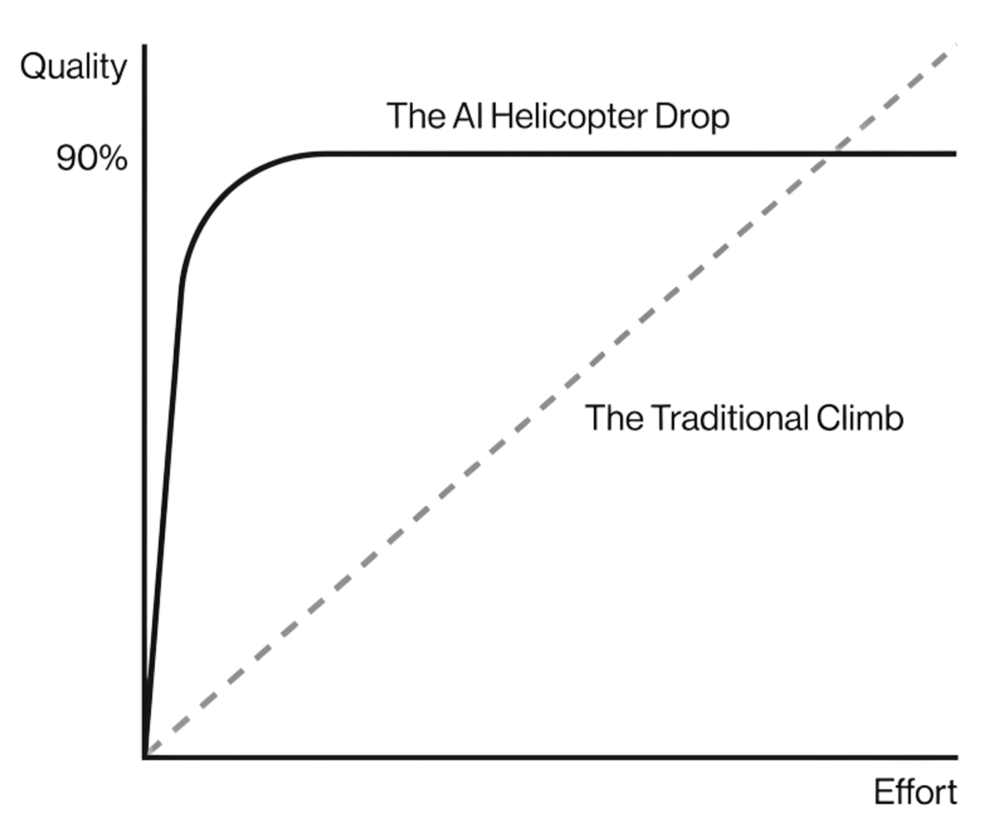

In 2022, at the Colorado State Fair, Jason Allen won a prize with his AI-generated work. When he was awarded the prize, he made the claim: “AI won, and humans lost.“165
When the news was released, it created outrage. One Twitter user commented, “10 years ago when I was telling people I switched to doing digital art this is what they assumed I did, just pressed a button and generated art\... now I guess they are giving awards for doing just that.“ But the truth is far more complicated than that. Jason Allen wasn't just pressing one button.
This project took 100 hours, most of which he spent struggling with the model output. He spent 80 hours on prompting, sifting through hundreds of “not-at-all-satisfactory“ samples, and finally achieved that unique, surreal lighting effect. Once the figure was dressed in flowing robes, he imported the work into Photoshop for a final 20 hours of manual refinement. It was a meticulous process of adjusting shadows and fixing details.
Allen's story forces us to confront a new organizational reality. We already know that AI makes it easier to get started. But its impact on finishing work is less clear. When a machine can give you a 90 percent perfect piece in 10 seconds, where does the motivation to spend 10 hours honing the remaining 10 percent come from? The real question may not be how to get to that 10 percent, but is that 10 percent worth the effort?
The previous two chapters have shown that organizations are getting worse at reading the quality of work and verifying results. The signal is compressed. The cost of verification is high. This chapter asks the question: how must organizations set standards and evaluate output when AI changes the shape of the production function? And given those changing standards, where should individuals really spend their time?
The Price of Perfection
Long before machines could paint, humans were dealing with the problem of perfectionism. Great work has never depended on talent alone; it depends on how much discomfort and delay someone is willing to endure for a slightly better result. If masterpieces have a secret fuel, it is obsession.
Stanley Kubrick was the high priest of this approach. During the filming of Eyes Wide Shut, he demanded take after take for even the simplest gestures. Tom Cruise described walking through a doorway dozens of times until Kubrick felt the moment was right. The production stretched to 46 consecutive weeks, setting a Guinness World Record.166
There is a flattering modern name for this: grit. Psychologist Angela Duckworth defines grit as the passion and perseverance to achieve long-term goals. It is the refusal to accept the tenth draft because the eleventh might be better. Duckworth argues this quality predicts success better than natural IQ. Grit can lead to great work, but it casts a long shadow.167
Even the most determined drive eventually has to end. At a certain point, a difficult question appears: Is this small increment of “better“ really worth what it costs?
At Pixar Animation Studios, artists call this trap “the beautifully shaded penny.“ It describes a situation where an artist pours days of labor into a detail the audience will never see, like a penny on a nightstand in the background. In Monsters, Inc., artists carefully designed individual surface effects for ninety CD cases in a character's apartment. But the CD cases appear for less than three seconds, and on screen, only a few of them are at all visible. The effort was impressive, and it was a good story to tell. But the value to the audience was near zero, and the cost to Pixar was real.168
The shadow-penny problem has many victims. Gustave Flaubert, the French writer, was known to pace his study for hours, reading sentences aloud until the rhythm felt right, sometimes discarding whole days' work for a single misplaced adjective. In his letters, he complained that entire days were lost while struggling over “five or six lines.“ It took him five years to complete Madame Bovary.169 Leonardo da Vinci produced thousands of sketches but fewer than twenty completed paintings because of his exacting standards. In modern times, George R. R. Martin's long-suffering readers may never see the next Game of Thrones volume.
To deal with the shadow-penny problem, creators had invented diverse methods to force themselves to stop. At Pixar, producer John Walker introduced a system involving popsicle sticks. He attached a row of sticks to a wall, each representing one person-week of labor. If a director wanted to polish a background detail, Walker pointed to the wall: Which stick should we use? More time on the background meant less time on the main character. Production now requires a trade-off of finite resources.170
Graham Greene found another solution. He divided his works into “novels“ and “entertainments.“ The novels carried profound artistic aspirations; the entertainments were thrillers written quickly and without the same crushing pressure. By labeling some of his works as “light,“ Greene freed himself from the demand that every single project justify unlimited effort.171
These rules are stopping technologies: preventing the unlimited expansion of effort. They enable people to complete their work, continue creating, and devote their energy to other things. But they are also imperfect answers. If we want to think about how to effectively solve the stopping problem, we need to systematically consider the general principles involved. This again leads us to economics.
The Economics of Stopping
Economics is often described as the study of markets, prices, and money. But it is simpler: it is the language of human decision-making. It examines how people make choices with limited time, attention, and energy, and, just as importantly, when to stop.
One insight from economics is that, for many activities, decisions are not simple binary choices of \“yes or no,\“ but rather \“how much to invest.\“ These choices are incremental choices. We decide not only whether to write, but also whether to revise. The question is not just about “Is it valuable?“, but “Is the next step worth the cost?“
The payoffs to almost any activity are not uniform; they follow the law of diminishing returns. Early efforts often yield significant gains, while later efforts yield progressively smaller improvements. In the end, people can spend a lot of time with little to show for it.
Consider a writer revising a chapter. The first revision restructures the argument and eliminates weak sections, creating a huge improvement. The second revision catches minor errors and tightens the prose. The improvement is smaller, but still worth the time. By the sixth revision, the gains are with small details that readers will hardly notice. This pattern is sometimes known as the 80/20 rule. A lot more effort is needed for the last part of the work. Given the diminishing returns, the question is when we should stop.
The rational approach is that we should continue only when the benefit of the next step is greater than the cost. We should stop when the additional benefit is equal to the additional cost. Beyond this point, continuing is actually a loss: the value of your time is greater than the value of the results you will get.
The stopping point is not just a property of the task. It is also a property of the person doing it, specifically, of what else they could be doing instead. Economists find that older individuals, retirees, and the unemployed systematically spend more time shopping and searching for lower prices. This is not because they benefit more from finding a bargain, though they might. The more likely reason is simply that they have more time. An hour spent searching costs a retiree very little. It costs a busy banker a great deal. Both stop when the benefit of continuing falls below the cost, but that cost is different for each of them.
And diminishing returns in quality do not always mean diminishing returns in value. An Olympic sprinter who shaves 0.02 seconds off her time has made a negligible improvement in absolute performance. But if that 0.02 seconds is the difference between gold and fourth place, the return in value is huge. Similarly, a pitch that is 5 percent more polished than the next firm\'s pitch wins the entire contract. In these cases, the quality curve is flat, but the reward curve rises sharply. This means that rational effort allocation is not simply a matter of examining the quality curve. You also need to know the reward structure. And this, as we will see, is a key issue in the age of AI.
When AI Frontload Progress
How does AI affect the decision of when to continue and when to stop? The answer lies in how AI reshapes the trajectory of progress.
The New Shape of Progress
Starting a project used to be the most challenging part of creative work. Creators put in lots of thought at the beginning to explore and generate ideas. Once an idea is settled, the execution process starts. The execution can be slow and sometimes tedious. There are lots of details to hammer out. But it is controllable, and progress is steady.
The old 80/20 pattern reflected this. Getting to 80 percent of quality required the bulk of the creative effort: figuring out ideas and concepts, and producing the rough first version. The remaining 20 percent was refinement: polishing prose, fixing edge cases, tightening the design. That final stretch was time-consuming, often frustrating, but the creator knew what needed to be done. The path to the final output was more or less known. Put it differently, the difficulty was in the long walk one has to take, not in finding the trail.
With AI, huge progress appears instantly. A single prompt generates a draft, a sketch, or a block of code in seconds, compressing hours of work into minutes. That is why the old 80/20 logic no longer fits. The new pattern is closer to 90/10, but the deeper change is not the ratio, but the nature of the production process. AI hands you something that looks nearly finished before you have worked out what is wrong with it, what “better“ even means, or which of the many possible improvements would matter. The creative part of the production now comes late.
The helicopter image captures the shift. AI drops you near the summit without the long climb. You save enormous effort, but you also skip the accumulation of skill, judgment, and feel that the climb once provided, and you do not see the trail that leads to the summit. Nevertheless, you can still ask AI for help for the last part of the journey. This creates two opposing forces.
The Knowledge Deficit. In the traditional production process, getting to 80 percent was evidence of understanding. A writer who had produced a strong draft had already wrestled with the structure of the argument and was knowledgeable about the supporting materials. By the time revision began, she knew all the foundational materials and only needed to fix the surface.
With AI, a draft appears before the thinking is done. The writer now faces polished prose without an equally developed mental model behind it. Her mind is no longer ahead of the page, but behind it. So the hardest part of the job, including diagnosing weaknesses, judging coherence, and deciding what matters, is harder than before. That is why AI so often produces stagnation: the user falls into a cycle of prompt, glance, and re-prompt. New output arrives, but the work does not truly improve.
Who breaks through the plateau depends on two factors. One is existing skill and domain knowledge. A skillful editor knows the structural reasons a draft is wrong. A less experienced one may not. An understanding of what excellence looks like is a key factor for breakthrough. The second factor has to do with the willingness to do hard thinking. The availability of AI makes it too easy to outsource the thinking too early, but real improvement still requires hard thinking.
The Companion Effect While AI may create the knowledge deficit required for further progress, it also gives something back. In the past a writer stuck at 90 percent was often alone with her doubts. And writing alone can be mentally taxing. Now the writer can ask the AI to critique her argument, suggest alternative framings, identify the weakest points, and generate different ways to restructure the conclusion.
This means the marginal cost of continuing has fallen. When AI functions as a thinking partner, the next hour of effort is less unpleasant and less lonely. Writers may even develop a flow experience working with AI, continuously pushing forward the quality of writing.
In sum, AI simultaneously raises the difficulty of the last 10 percent because the creator lacks the accumulated understanding that used to come from the early hard climb, and lowers the cost of working on it because there is a collaborator. That combination creates a bifurcation: some people stop early once the visible gains disappear, and others keep going because they know they can improve and the marginal cost of working is acceptable. The evidence shows both patterns.

The mediocrity trap and the last-mile illusion
To find out the effect of AI on the creative process, Jin and his coauthors ran an experiment with 219 artists, ranging from students to professionals. The task was to illustrate passages from famous novels. Each artist worked for up to 150 minutes, and we looked at the entire creative process with and without AI.172
We recorded every brushstroke, undo, and prompt, and independent judges scored the artwork at fifteen-minute intervals. Without AI, the pattern was the familiar pattern of progress with diminishing returns. The first hour produced a rough composition. The artists then added color and shading, and finally brought fine details.
With AI, the shape of progress changed sharply. Within thirty minutes, many artists reached a quality level that would have taken two hours by hand. But then, they hit a wall. After minute 45, the quality curve plateaued. Further gains were barely noticeable, even as artists kept tweaking prompts and patching details. This pattern is consistent with the knowledge deficit discussed earlier. AI helped the artists to get a polished image before they had put in enough thinking on the composition, making further improvement difficult.
The new shape of progress led to behavioral changes in many artists. Without AI, almost all artists worked to the deadline. With AI, there was a bifurcation. One group stopped early, right around minute 60, where the plateau starts. They reached a point where additional effort no longer seemed to improve the work and made the reasonable choice to stop. For them, the expected marginal benefit had fallen sharply. Better technology from AI did not bring in higher final quality ratings for these artists. AI became a time-saver, but also a mediocrity trap that stopped them.
The other group did the opposite: they kept working all the way to the full 150 minutes. But what's interesting is that this extra time produced little quality gain for them. The final qualities, as rated by the judges, are not noticeably different from those who stop earlier. In other words, the quality plateaued in the time allowed. This is the group with low marginal costs.
In art, “good enough“ is often acceptable. But what happens in settings where the precision is more important, such as software engineering?
Model Evaluation & Threat Research (METR) explored this question in a field experiment in software development. They recruited 16 experienced open-source developers and gave them real tasks drawn from large, mature codebases that the developers already knew well. These are projects where contributors had, on average, years of prior experience. Tasks were randomly assigned to an “AI allowed“ condition or a “no AI“ condition, and the researchers measured how long the same kinds of issues took to complete in each mode.173
The result was the opposite of what almost everyone expected. With access to frontier coding assistants, developers took about 19 percent longer to finish their tasks. Interestingly, developers felt faster: before starting, they predicted a substantial speedup, and afterward they still believed the AI had helped, despite the stopwatch showing the reverse.
This finding is in line with the two effects in the “helicopter drop“ logic. AI gets you to the high-altitude camp instantly, generating 90 percent of the code quickly. But because you did not make the climb yourself, you lack the knowledge that would let you finish the last mile quickly. At the same time, the companion effect is still present. AI lowers the cost of continuing, and you keep going because bugs need to be fixed. Both because the rate of progress is lower and the programmers won't stop until they reach a sufficiently high level of output, the entire process becomes even longer than before.
The organizational standard-setting problem
The 90/10 production function creates a problem that is as much organizational as individual. When AI gets everyone to 90 percent instantly, the organization faces a new sorting challenge: how do you distinguish workers who pushed to 98 percent from those who stopped at 91 percent? The surface looks identical. The verification costs we analyzed in Chapter 10 make the problem worse --- the manager reviewing the output cannot easily tell which version represents serious effort.
The complementarity logic from Chapter 7 applies here. An organization's quality standards, incentive systems, and evaluation processes form a cluster. If the production function changes shape from a slow climb to a helicopter drop with a plateau, the entire cluster must adjust. An organization that still rewards volume of polished output is rewarding the 90 percent that AI provides for free.
The first step is to stop treating all output equally. The work of the organization can be roughly divided into commodity tasks, such as writing meeting minutes for internal documents, formatting data for spreadsheets, or writing routine status updates, where 90 percent of the quality is good enough. And star tasks, such as a client presentation or a high-stakes negotiation, where success requires the last 10 percent as well.
For commodity tasks, the goal is competence, not aesthetics. For these tasks, if the AI gets you to 90 percent, the organization should accept that and move on. Spending an hour to polish it further is a waste.
But “star tasks“ are quite different. For these tasks, the difference between “good“ and “excellent“ is crucial. The organization needs to invest the time to elevate the work from “acceptable“ to “excellent.“
The harder step is to redesign incentives to reward the last 10 percent on star tasks rather than rewarding volume across all tasks. An organization that measures productivity by volume will get mountains of 90 percent work and very little excellence.
For the individual, the implications are the same. Sort your own work into commodity and star tasks before you start. The mistake many people make is treating every task like a star task.
This brings us back to where we began. Jason Allen did not win the Colorado State Fair by pressing a button. He won because he treated the piece as a star task and refused to stop at the plateau. His eighty hours of prompt iteration and twenty hours of manual refinement were not wasted effort; they were the price of the last 10 percent. Most people who generate an image with AI look at it, feel impressed, and move on. Allen looked at it, saw what was missing, and kept going. For organizations, the question is whether their systems can identify and reward the Allen in the room or whether instead they treat his hundred hours the same as someone else's five minutes.